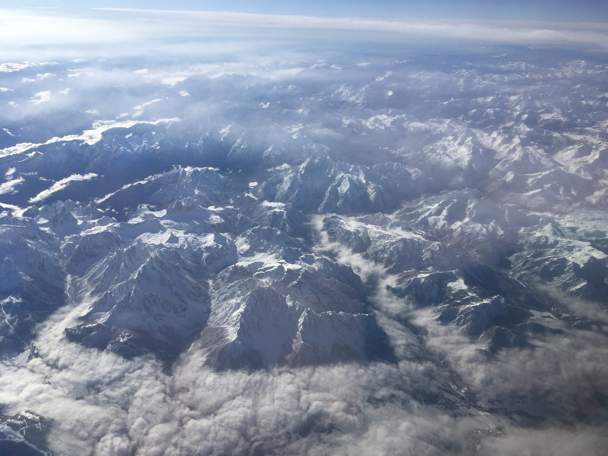

Move and explore the planet
Posted by CM on Satruday, August 3rd 2024
You are invited to join the regeneration of our era.
This project is for the dedication of life on Earth. Exploring, experiencing, preserving and regenerating all it's beauty.
Why Cactus?
Because they can live in the driest climate on Earth and still store water. Like camels..
- In Aisa
- In Europe
- In Africa
- In Australia
- In North and South America
You can learn more at MDN Web Docs.
Why Mangroves?
Cause they actually are the lungs of our planet. Storing more
carbon than any other forest on Earth. They are wetland
ecosystems protecting coastlines from high waves during storms. Cleaning
the water and giving home to hundreds if not thousands of endangered
species like the